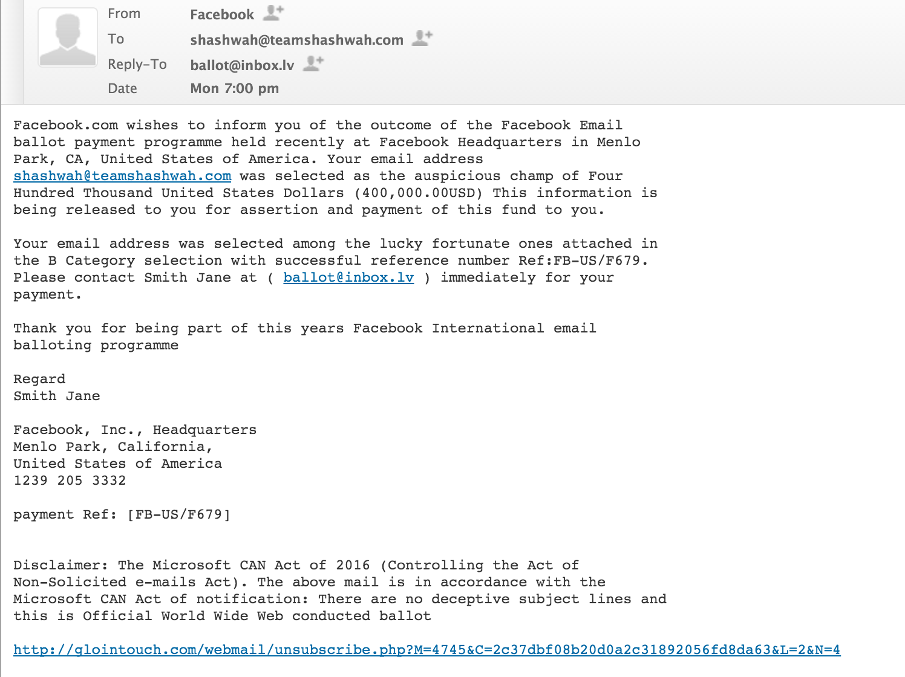

This is Mr Ryugazaki, he's a legend and my favourite character from Free! and if it wasn't him it would have to be Mr Hazuki, mostly because of Octopimp's 50% Off, which is an amazing fan based parody. One of the random things I enjoy doing is making very basic designs of odd creatures, they're fun to do: but I don't usually put too much effort into them.
I also really enjoy making fun of scam emails that claim to be giving you money, they're quite fun to look at: 
Like look at this masterpiece, you can only find things like this on the internet.
Sometimes I actually work on things and in instances like that, I usually write code, doesn't really matter what it's for, I just enjoy making things... Such as a Perlin Noise Generator for iOS, or my game Pixel-Fall for iOS, I even occasionally work on things for Windows but that hasn't properly happened in quite a while.
I'm kinda all over the place when it comes to working on things because it's always so easy to get distracted and end up working on things that aren't relevant to my current projects, this is a major problem for me but I don't really mind too much.
The plan is that I will work on different applications here and there until one day I finally have built up enough money and have earned a trustful reputation so that I can publicly run my own company and make money off of that instead of something crazy like working for someone else (so disgusting isn't it, doing what most people do) but currently being a student takes a lot of that time that I would otherwise just work constantly during.
A lot of people are supporting me through this dream, others don't really understand what I'm trying to do and then there are some who don't want me to follow this dream but I don't really care about what those ones think, I'm too fabulous to worry about everything they think is right, instead I will just prove them all wrong!